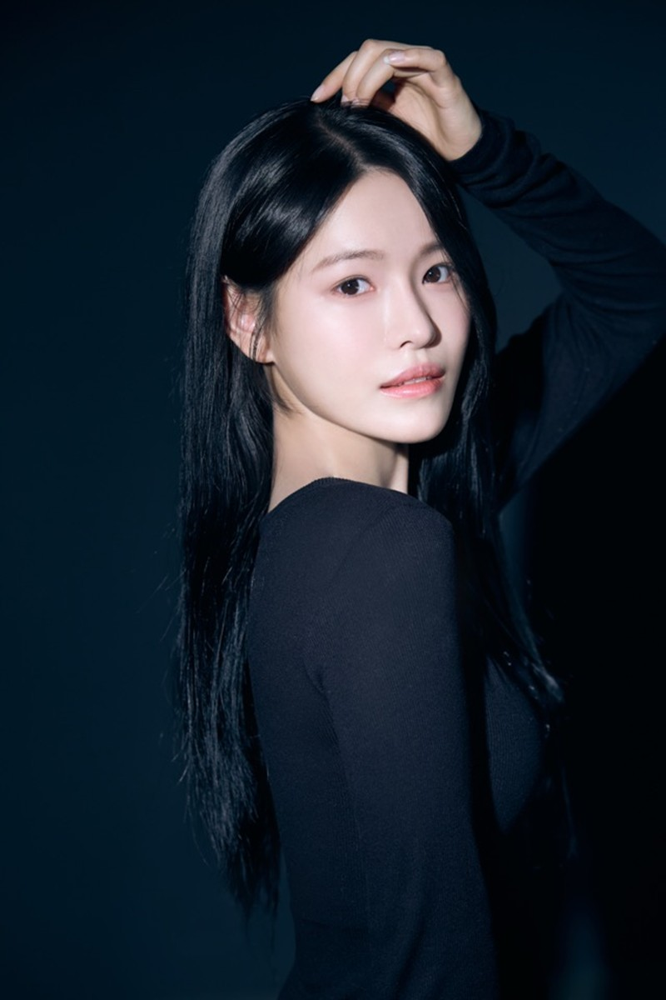

백석예술대학교 공연예술학과 뮤지컬 전공 합격 (실기,면접) '22
학교 출강 : 도래울고, 야탑중, 한빛중, 포승중, 검단중, 연수중, 신천초
어나더컴퍼니 강사 (면접)
결혼식 축가 다수 (온더웨딩)
문화예술교육사2급
[ Movie ]
2025 단편영화 복우 수진역
2024 단편영화 우리가사랑하는이유 새봄역 / 단편영화 스탭 예지역 / 단편영화 결핍 은솔역
2022 영화 B컷 에스테틱직원역
[ Drama ]
2025 웹드라마 룸메이트 수진역
2025 숏폼드라마 너와나의거리 동아리부원역
2019 웹드라마 인싸가된 아싸짱 여고생역
[ Musical ]
2025 뮤지컬 방과후출근 송라라역 / 뮤지컬 독립선언서 노순경역
2024 뮤지컬 고투파라다이스 오지현역